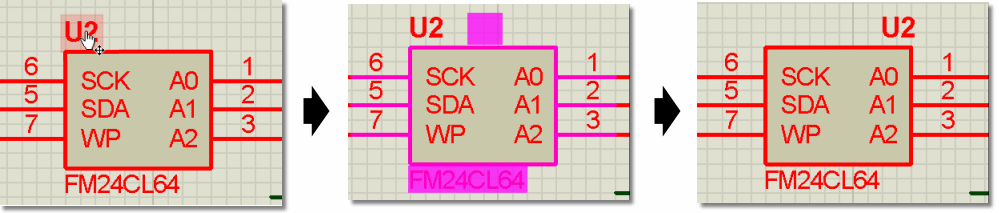
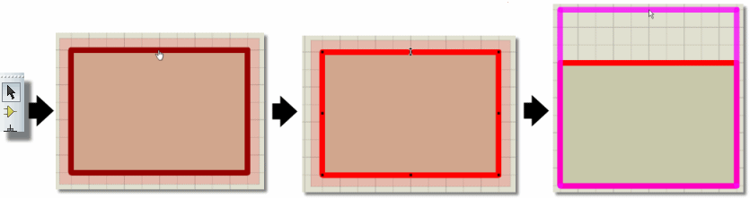
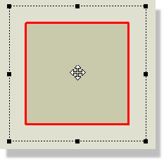

Proteus supports many types of object, and full details of the purpose and behaviour of each type is given in the chapter on Object Specifics. However, the basic steps for placing an object are the same for all types.
To place an object:
See Also:
Selecting Parts from the Library (Tutorial)
Placing Objects on the Schematic (Tutorial)
Tagging or highlighting an object can be done in several ways as detailed below :
Normal use would be to use either modeless selection or simply to right click on the object, however it is very much an area for personal preference.
Objects may be de-selected either by right clicking in free space and selecting the Clear Selection option from the context menu or simply by left clicking in free space.
See Also:
Timesaving Techniques & Block Editing (Tutorial).
You can delete any object by pointing at it, clicking right and selecting Delete from the resulting context menu. All wires connected to the object will also be deleted, except in the case of a dot connected to exactly 2 wires, in which case the wires will be joined.
Note that for 2D Graphics objects you must right click on the border of the graphic to invoke the context menu - it is possible that 2D graphics may be placed around or behind another object and it is therefore necessary to ensure that the 2D graphic (as opposed to the other object) is the one you want to action on.
You can drag (i.e. re-position) any tagged object by pointing at it (the cursor will change to indicate that the object can be dragged)and then dragging with the left button depressed. This applies not only to whole objects, such a components, but also individually to their labels.
See Also:
Basic Schematic Entry (Tutorial)
Many object types have one or more labels attached to them. For example, each component has a reference label and a value label. It is very easy to move these labels in order to improve the appearance of your schematics.
To move a label:

Sub-circuits, graphs, lines, boxes and circles may be resized. When you tag these objects, little white squares called handles will appear and the object can be re-sized by dragging the handles.
To resize an object:

See the section on Resizing 2D Graphics for information about advanced use of handles when resizing 2D graphics path objects.
Many of the object types may be oriented - that is rotated through 0°, 90°, 270° and 360° and reflected in x and/or y. If such an object is tagged, the Rotation and Mirror icons will change colour from blue to red, and will then affect the tagged object.
To reorient an object:
It is worth noting that if the Rotation and Mirror icons are red, operating them will affect an object somewhere on the diagram, even if you cannot currently see it. This becomes important if, in fact, you wish to manipulate a new object which you are about to place. If the icons are red, first untag the existing object by pointing at an empty area of the design in the Editing Window and clicking left. The icons will then revert to blue, indicating that it is 'safe' to adjust them.
Rotation Icons
Many of the objects have graphical and/or textual properties that may be edited through a dialogue form, and because this is a very common operation we have provided a variety of ways to achieve it.
To edit a single object using the mouse:
Either:
Right click on the object and select Edit Properties from the resulting context menu.
Or:
Double click the left mouse button on the object.
To edit a succession of objects using the mouse:
To edit an object and access special edit modes:
For text scripts, this will invoke the external text editor. Also, if the mouse is not over any object, this command will edit the current graph, if any.
To edit a component by name:
This will locate and bring up the dialogue form for any component in the design, not just those on the current sheet. After the edit, the screen is re-drawn with the component in the centre. You can thus use this command to locate a component, even if you do not actually want to edit it.
Details pertaining to the operation of the dialogue forms associated with each object type are given in the Object Specifics section of this documentation.
Component, terminal, wire and bus labels can all be edited in much the same way as objects:
To edit a single object label using the mouse:
To edit a succession of object labels using the mouse:
Either way, a dialogue form with Label and Style tabs is displayed. The editing of local text styles is fully covered in the tutorial on graphics and text styles- see Editing Local Styles.
To copy a section of circuitry:
When components are copied, their references are automatically reset to the un-annotated state so as to ready them for automatic annotation, and prevent the occurrence of multiple instances of the same part IDs.
To move a set of objects:

Moving a tagged object
The behaviour of wires during block move is somewhat subtle. Essentially, Proteus will move all wires or parts of wires enclosed in the tag-box without re-routing them, and then, where wires cross the boundaries of the tag-box, it will reroute from the last point inside the tag-box to the first point outside it. It follows that you can control whether a section of wiring is preserved or re-routed according to whether you include it in the tag-box or not.
To delete a group of objects:
If you delete something by mistake, you can recover it using the Undo command.
To rotate a group of objects:
Note that you cannot Block Rotate a tagged section of circuitry if either a sub-circuit or a graph is highlighted (these objects have a fixed orientation). Also, depending on the complexity of the design and in particular whether tagged components are wired up, this operation may take a few seconds to complete. As always, you can undo the rotation via the Undo command.